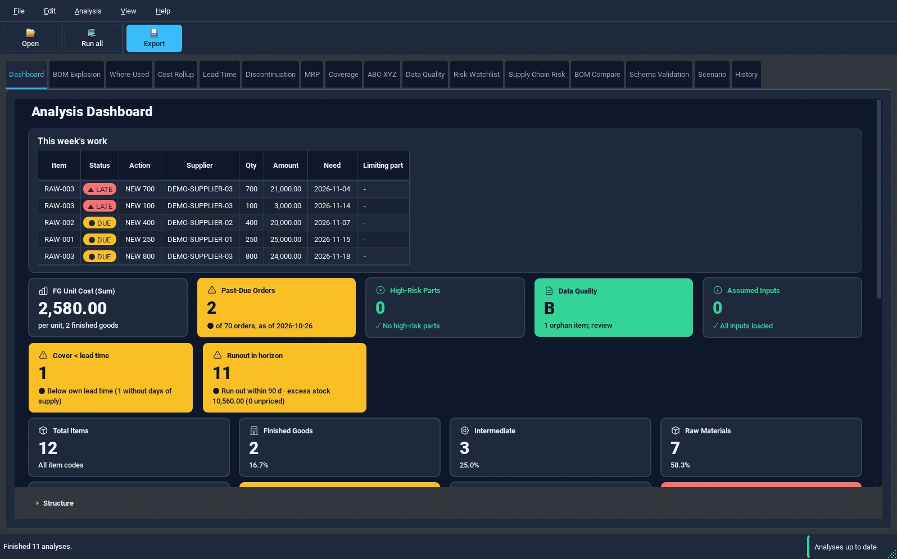
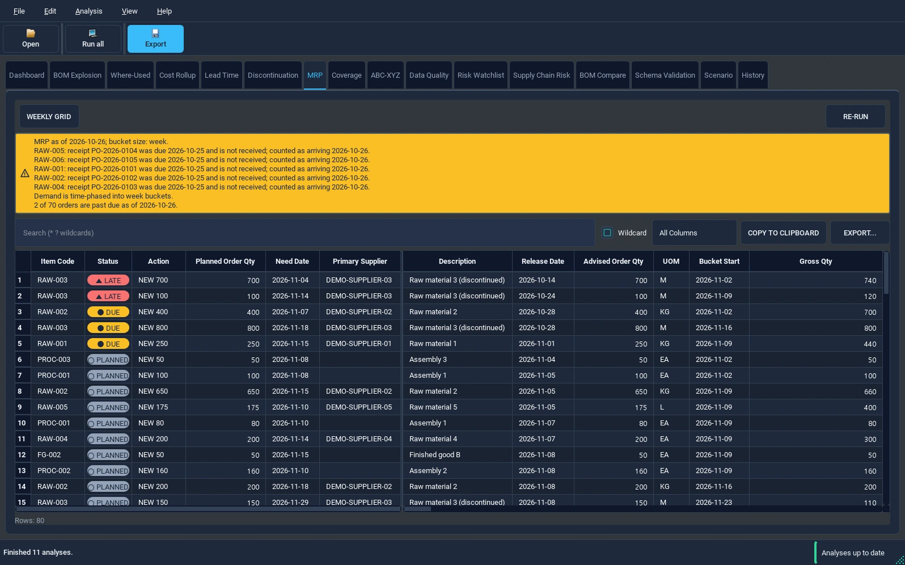

Your BOM.
A clearer plan.
Connect the parts, stock and demand in your Excel workbook. See what needs attention before you buy or build.
No Python installation. No account. Local workbook processing.

The detail behind
the decision.
A BOM is more useful when it connects to what is on hand, what is coming in and what is needed next.
- Plan purchases and production
- Review material requirements, planned order dates and suggested actions alongside dated receipts.
- Understand stock and cost
- Check shortages, days of supply, buildable quantities and multi-level costs. Missing prices stay visible.
- Review before you act
- Explore supply risk and what-if scenarios. Export your analysis or a Manager Brief for the next conversation.
From a shortage
to a next step.
Read the quantity, need date and proposed action together. Keep the assumptions in view.


Dates belong to each receipt.
A later receipt does not silently cover an earlier need. Review overdue and missing-date disclosures alongside the plan.
Advice stays separate from execution.
PyBOM does not place orders or write back to your ERP. Your operational constraints and approval process still decide what happens.
Start where your
data already is.
Keep your Excel workflow. Add a structured way to review the plan.
Open your workbook
Load the BOM, then add inventory, dated demand, item and cost information as available.
Check the mapping
Match your sheets and columns. Read the import summary for missing inputs, exclusions and assumptions.
Analyze and share
Choose Run all. Review the results, export to Excel and follow up on the items that need attention.
Try it with
fictional data first.
The English workbook explains every input column with a note. Its supplier names are neutral demo identifiers, not companies.
Same quantities and dates as the Korean example. Use the as-of date 2026-10-15 to reproduce its schedule.
Ready for
your next plan.
PyBOM 1.0.0 for Windows x64.
Download for WindowsPortable ZIP, approximately 79 MB. Checked on Windows 11.
Extract the whole folder.
Open PyBOM.exe after extraction. Keep the _internal folder beside it. No Python installation is required.
The executable is not code-signed. Follow your organization’s software approval process if Windows displays a warning.
The ZIP includes the original Korean workbook. Download the English example separately above.
Looking for the application source?A few things to know.
Does my workbook leave my PC?
The desktop app processes your workbook locally. No upload or cloud account is required for analysis. This download site is hosted on GitHub Pages; it does not accept your workbook or add analytics scripts.
Do I need every input sheet?
You can start with a BOM for structure analysis. Useful purchasing and production plans also need inventory, dated demand and lead times. Cost and supplier inputs support their respective analyses. Review missing-input disclosures before acting.
Is PyBOM an ERP replacement?
No. It is an advisory analysis tool. It does not create purchase orders, update stock or write back to your ERP. Review the recommendations against your operating constraints.
Where can I get help?
Read the getting started guide or report an issue. Use anonymized examples. Never post production workbooks, supplier prices or other confidential information.